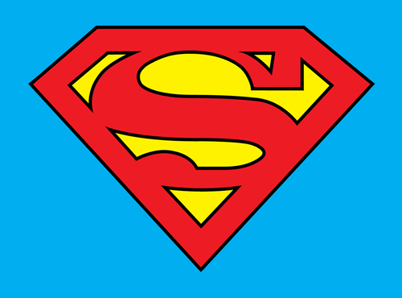
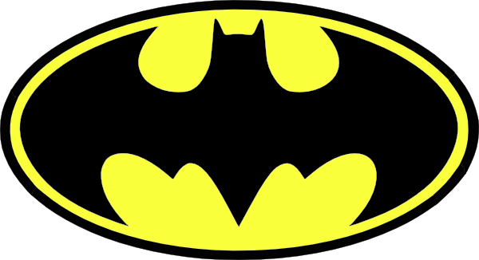
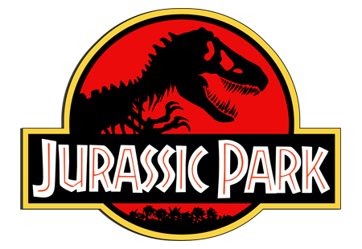

Example #1: default
Image logo with default properties.
jQuery
$('#disney').loadgo();
Javascript
Loadgo.init(document.getElementById("disney"));

0 %
Example #2: opacity, no transition animation and background color
Image logo with opacity set to 0.2, without width transition when changing progress and background set to #01AEF0
jQuery
$('#superman').loadgo({
'opacity': 0.2,
'animated': false,
'bgcolor': '#01AEF0'
});
Javascript
Loadgo.init(document.getElementById("superman"), {
'opacity': 0.2,
'animated': false,
'bgcolor': '#01AEF0'
});

0 %
Example #3: image overlay
Image logo is the original (in this case, Batman's logo with yellow background) and overlay image is the one with some filter, or other effect pretty similar to the original image logo (in this case, Batman's logo with white background).
jQuery
$('#batman').loadgo({
'opacity': 1,
'image': 'batman-overlay.png'
});
Javascript
Loadgo.init(document.getElementById("batman"), {
'opacity': 1,
'image': 'batman-overlay.png'
});

0 %
Example #4: playing with directions
Loading animation can be set from: left to right (lt), right to left (rl), bottom to top (bt) or top to bottom (tb);
// Left to Right - jQuery
$('#jurassiclr').loadgo({
'direction': 'lr'
});
// Left to Right - Javascript
var jlr = document.getElementById("jurassiclr");
Loadgo.init(jlr, {
'direction': 'lr'
});

0 %
// Right to Left - jQuery
$('#jurassicrl').loadgo({
'direction': 'rl'
});
// Right to Left - Javascript
var jrl = document.getElementById("jurassicrl");
Loadgo.init(jrl, {
'direction': 'rl'
});
0 %
// Bottom to Top - jQuery
$('#jurassicbt').loadgo({
'direction': 'bt'
});
// Bottom to Top - Javascript
var jbt = document.getElementById("jurassicbt");
Loadgo.init(jbt, {
'direction': 'bt'
});
0 %
// Top to Bottom - jQuery
$('#jurassictb').loadgo({
'direction': 'tb'
});
// Top to Bottom - Javascript
var jtb = document.getElementById("jurassictb");
Loadgo.init(jtb, {
'direction': 'tb'
});
0 %
Example #5: filters
CSS3 image filters applied for progress instead of an overlay.
// Sepia - jQuery
$('#spidermanSepia').loadgo({
'filter': 'sepia'
});
// Sepia - Javascript
var ssepia = document.getElementById("spidermanSepia");
Loadgo.init(ssepia, {
'filter': 'sepia'
});
0 %
// Blur - jQuery
$('#spidermanBlur').loadgo({
'filter': 'blur'
});
// Blur - Javascript
var sblur = document.getElementById("spidermanBlur");
Loadgo.init(sblur, {
'filter': 'blur'
});
0 %
// Invert - jQuery
$('#spidermanInvert').loadgo({
'filter': 'invert'
});
// Invert - Javascript
var sinvert = document.getElementById("spidermanInvert");
Loadgo.init(sinvert, {
'filter': 'invert'
});
0 %
// Hue Rotate - jQuery
$('#spidermanHue').loadgo({
'filter': 'hue-rotate'
});
// Hue Rotate - Javascript
var shue = document.getElementById("spidermanHue");
Loadgo.init(shue, {
'filter': 'hue-rotate'
});
0 %
// Opacity - jQuery
$('#spidermanOpacity').loadgo({
'filter': 'opacity'
});
// Opacity - Javascript
var sopacity = document.getElementById("spidermanOpacity");
Loadgo.init(sopacity, {
'filter': 'opacity'
});
0 %
// Grayscale - jQuery
$('#spidermanGrayscale').loadgo({
'filter': 'grayscale'
});
// Grayscale - Javascript
var sgray = document.getElementById("spidermanGrayscale");
Loadgo.init(sgray, {
'filter': 'grayscale'
});
0 %